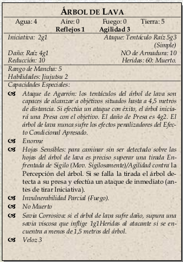

|  | Parecen ser un gran bosque que crece al revés, con las hojas en el suelo y las retorcidas raíces alzándose
hacia el cielo. En realidad las hojas son sensores; cualquiera que las toque hará que las raíces-tentáculos
les ataquen. Para atravesar el bosque de árboles de lava sin que ataquen, será necesario superar una
tirada de Atletismo/Agilidad NO de 30. |